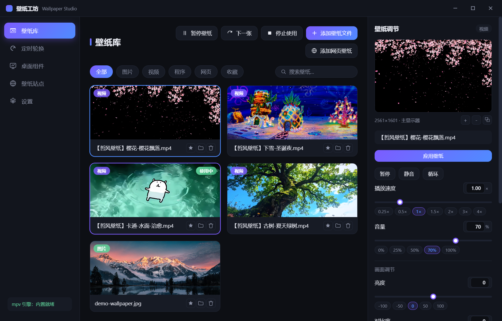

壁纸工坊是一款免费开源的 Windows 桌面壁纸软件 — 视频、图片、网页、EXE 程序皆可设为壁纸，点选/框选收纳桌面快捷方式为转盘、文件与文件夹收进独立收纳区，时钟/CPU/GPU/音量/音律动效组件融入桌面，参数精确可调，性能深度优化。
Windows 10 / 11 · x64v1.8.6 · 约 200 MB（内置全格式解码器）MIT 开源协议下载慢？试试 备用加速节点国内镜像：wallpaper-studio.pages.dev

从静态图片到可交互网页、再到任意 EXE 程序，桌面可以是你想要的任何样子。
每一个参数都有固定调整点与精确数值输入，每一帧渲染都为低占用而优化。
系统音频实时频谱可视化，随音乐律动：条形频谱 + 垂直镜像倒影，支持主色/渐变色、大小缩放、灵敏度调节与顶部/底部摆放，融入壁纸不突兀，桌面秒变音乐现场。
时钟 / CPU / GPU / 内存 / 音量 / 音律动效每个组件独立小窗口、无边框融入壁纸；客户端一键进入「调整模式」自由拖动，桌面默认只显示不误触；组件、音律动效、转盘均支持九宫格三行三列一键吸附定位，任务栏自动避让。
全屏选择器直接点选或拖框选择桌面快捷方式，一键收纳进转盘 — 原桌面图标随之隐藏（文件移到应用数据目录保管）；从转盘移除、一键"全部恢复"或关闭功能时，自动移回桌面原位置恢复显示，桌面始终清爽可控。
只在视频结尾定格后开始溶解（静止帧叠加，肉眼无感）；结尾 70ms 高频轮询 + 淡入 33ms 专用步进，定格停顿压缩到 0.1s 级、淡入 ~30fps 平滑无跳变，长时间循环稳定如一。
检查更新发现新版本后，弹出新版功能介绍窗口（更新日志直读发布页）；点「立即更新」在客户端内直接下载安装包（实时进度、可随时取消），下载完成自动静默安装 — 全程无需跳转网页、无需手动下载替换。
桌面普通文件（办公文档 / 媒体 / 归档）与文件夹收进独立浮层，与快捷方式转盘职责分离：文件夹 / 文件自动分组排列（可按名称 / 时间 / 手动排序），网格列数与透明度可调；鼠标靠近正常显示、离开自动转半透明毛玻璃，与壁纸协调；文件收纳即移动隐藏、可一键恢复，文件夹仅登记引用点开即进。
快捷方式（.lnk/.url）、程序文件（.exe/.bat/.cmd）与系统项（控制面板 / 回收站 / 网络 / 此电脑）以转盘形式收纳在桌面（图标层之上、不遮挡任何窗口）：点击图标一键启动，图标取系统真实图标无空白占位；按住图标条或拖动条左右拖动即可像转盘一样轮换图标（带惯性甩动）；同屏数量 4~12 可调；空闲自动收起为小胶囊，悬停即展开；无边框轻量设计融入壁纸。
视频循环交界处新画面柔和淡入覆盖 — 旧画面保持不透明垫底，亮度恒定、无黑变无重影；smoothstep 缓动曲线 + 双引擎进程交替，过渡如行云流水，长时间循环稳定如一。
播放卡死（硬解设备失效/进程冻结）时，备用引擎在冻结画面上方直接顶替 — 全程无黑屏、不打断使用；结尾定格僵死、循环状态脱节等边缘场景均有兜底修复，播放健康检查 15 秒内自动恢复。
时钟（点击切换 12/24 小时制）、CPU / GPU / 内存实时占用条、音量控制条 — 自由搭配融入壁纸，桌面直接拖动调音量、点击静音，全部可交互。
一键暂停视频与轮换恢复桌面清爽（托盘亦可操作）；多壁纸定时轮换支持全部/收藏/自定义列表，随机或顺序切换，工具栏一键"下一张"。
全屏应用、笔记本电池供电、其他窗口最大化（Wallpaper Engine 同款）三种场景自动暂停视频壁纸，释放 CPU/GPU，条件解除自动恢复，每一项均可开关。
Ctrl+Alt+W 一键暂停 / 恢复壁纸 — 打游戏、看视频、开会演示时随手关掉动态壁纸，系统级生效，设置中可停用。
内置 4K Desk、TooPIC、好壁纸、魔玉部落、Wallhaven、必应壁纸、Unsplash、Pexels 等 13 个热门免费壁纸站点，点击直达浏览器。
播放速度（0.25×–4×）、音量、亮度、对比度、饱和度全部可调。每项参数提供固定调整点一键跳转，也支持直接输入数值精确设定，调节实时生效。
按主显示器真实比例预览壁纸效果，预览区可放大缩小，还可弹出独立预览窗口自由调整大小，参数调节实时同步反馈。
GPU 硬件解码 + 渲染分辨率限制（原生/1080P/720P/480P）+ 渲染质量三档 + 智能自动暂停（全屏/电池/窗口最大化）。游戏时自动释放 CPU/GPU，退出自动恢复。
壁纸窗口嵌入系统 WorkerW 图标层之下，多显示器铺满虚拟桌面；图片壁纸可一键同步设置为 Windows 锁屏与登录背景。
收藏、搜索、类型筛选、双击卡片即可应用，托盘常驻随时暂停/恢复/切换。
壁纸窗口丢失自动恢复、桌面层级变化自动重挂载、播放状态自动对账 — 关掉资源管理器、切换显示器，壁纸始终稳定显示。
MP4 / AVI / MKV / FLV / WebM / MOV 全格式硬解直读，无需转码；内置完整解码器，安装即用。
免费、开源、全格式、可深度调参 — 一张表看清差异。
| 能力 | 壁纸工坊 | Wallpaper Engine | Lively Wallpaper | 火萤视频桌面 |
|---|---|---|---|---|
| 价格 | 免费开源 | 付费（¥19） | 免费 | 免费 |
| 视频壁纸 | ✓ | ✓ | ✓ | ✓ |
| 全格式视频（MP4/AVI/MKV/FLV…） | ✓ mpv 内核 | ✓ | 仅常见格式 | 仅常见格式 |
| EXE 程序壁纸 | ✓ | ✓ | ✕ | ✕ |
| 桌面快捷方式转盘（App 收纳启动） | ✓ v1.5.0 | ✕ | ✕ | ✕ |
| 点选 / 框选桌面快捷方式收纳 | ✓ v1.6.0 | ✕ | ✕ | ✕ |
| 文件 / 文件夹收纳区（独立浮层） | ✓ v1.8.0 | ✕ | ✕ | ✕ |
| 应用内一键更新（功能介绍弹窗 + 免跳网页安装） | ✓ v1.8.1 | ✓ | ✓ | ✕ |
| 音律动效（系统音频频谱可视化） | ✓ v1.7.0 | ✕ | ✕ | ✕ |
| 播放速度调节 | ✓ 0.25×–4× | ✕ | ✕ | ✕ |
| 桌面 DIY 组件（时钟/CPU/GPU/音量） | ✓ 内置可交互 | 需创意工坊资产 | ✕ | ✕ |
| 多壁纸定时轮换 | ✓ 随机/顺序/自定义列表 | ✓ | ✓ | ✕ |
| 壁纸站点导航 | ✓ 内置热门站点 | ✓ 创意工坊 | ✕ | ✓ 内容社区 |
| 亮度/对比度/饱和度调节 | ✓ 含预设点 | ✕ | ✕ | ✕ |
| 渲染分辨率限制 | ✓ | ✕ | ✕ | ✕ |
| 锁屏壁纸设置 | ✓ | ✕ | ✕ | ✕ |
| 全屏应用自动暂停 | ✓ | ✓ | ✓ | ✓ |
| 安装体积 | 约 200 MB | 约 700 MB | 约 200 MB | 约 100 MB |
| 开源可审计 | ✓ MIT | ✕ | ✓ | ✕ |
* 对比基于各软件 2026 年公开版本的默认功能，仅供参考。
当前版本 v1.8.6 · 持续迭代中 · 每个版本均可下载安装包
* v1.0.0 为内部首发版本，未提供公开安装包；公开发布自 v1.1.0 起。